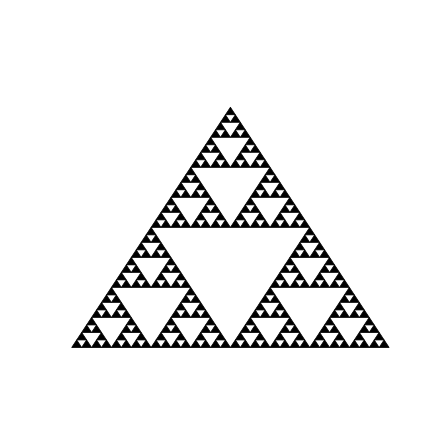
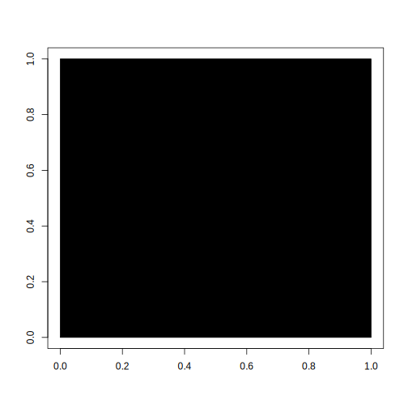
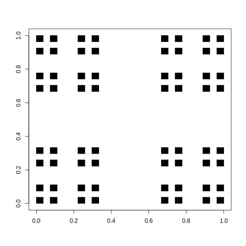

Rozdział 5 Zalaczniki
5.1 Przykłady w Julia
using Plots
function trojkat(x, y, bok)
return [(x+bok*0,y+bok*0),(x+bok*1,y+bok*0),(x+bok*1/2,y+bok*sqrt(2)/2),(x+bok*0,y+bok*0)]
end
# czyścimy ekran
E = 0.05
Plots.plot(0,xlim=(0-E,1+E),ylim=(0-E,1+E-0.1))
function rysuj_uszczelke(x, y, szerokosc, iteracja)
if iteracja == 0
Plots.plot!(trojkat(x, y, szerokosc), seriestype=:shape, color=:black, legend=:false)
else
rysuj_uszczelke(x, y, szerokosc / 2, iteracja - 1)
rysuj_uszczelke(x+szerokosc / 2, y, szerokosc / 2, iteracja - 1)
rysuj_uszczelke(x+szerokosc / 4, y+sqrt(3)*szerokosc/4, szerokosc / 2, iteracja - 1)
end
current()
end
rysuj_uszczelke(0, 0, 1, 5)using Plots
# czyścimy ekran
E = 0.05
Plots.plot(0,xlim=(0-E,1+E),ylim=(0-E,1+E-0.1))
function rysuj_uszczelke(x, y, szerokosc, iteracja)
if iteracja == 0
Plots.scatter!([x], [y], markerstrokecolor=:white, markersize=3, color=:black, legend=:false)
else
rysuj_uszczelke(x, y, szerokosc/2, iteracja - 1)
rysuj_uszczelke(x+szerokosc/2, y, szerokosc/2, iteracja - 1)
rysuj_uszczelke(x+szerokosc/4, y+sqrt(3)*szerokosc/4, szerokosc/2, iteracja - 1)
end
current()
end
rysuj_uszczelke(0, 0, 1, 8)5.2 Przykłady w R
W programie R nie ma funkcji rysującej trójkąty, więc musimy ją najpierw zdefiniować. Do tego celu używamy funkcji polygon, która rysuje wypełnione zamknięte wielokąty. Na jej bazie definiujemy funkcje trojkat rysującą trójkąt równoboczny o boku bok zaczepiony lewym dolnym rogiem w punkcie (x, y).
trojkat <- function(x, y, bok) {
polygon(x + bok*c(0, 1, 1/2),
y + bok*c(0, 0, sqrt(3)/2),
col = "black")
}Przetestujmy tę funkcję. Najpierw funkcją plot.new otworzymy nowy obszar do rysowania o wymiarach 1x1 a następnie narysujemy trójkąt o boku 1.
plot.new()
trojkat(0, 0, 1)
Jeżeli chcielibyśmy narysować drugi krok konstrukcji trójkąta Sierpińskiego to musielibyśmy wywołać funkcję trojkat trzy razy.
plot.new()
trojkat(0, 0, 0.5)
trojkat(0.5, 0, 0.5)
trojkat(0.25, sqrt(3)/4, 0.5)Aby narysować trzeci krok należałoby wywołać tę funkcję \(3^2\) razy.
plot.new()
trojkat(0, 0, 0.25)
trojkat(0.25, 0, 0.25)
trojkat(0.125,sqrt(3)/8, 0.25)
trojkat(0.5, 0, 0.25)
trojkat(0.75, 0, 0.25)
trojkat(0.625, sqrt(3)/8, 0.25)
trojkat(0.25, sqrt(3)/4, 0.25)
trojkat(0.50, sqrt(3)/4, 0.25)
trojkat(0.375,3*sqrt(3)/8, 0.25)Rysowanie kolejnych kroków kopiując linijki z funkcją trojkat byłoby niepraktyczne. Znacznie lepiej wykorzystać rekurencje. Poniżej tworzymy funkcje fraktal_trojkat, która w kroku 0 rysuje w trójkąt o zadanym boku a w innych krokach wywoluje się z poleceniem narysowani trzech miejszych fraktali o boku będącym połową wyjściowego.
fraktal_trojkat <- function(x, y, bok, krok = 0) {
if (krok == 0) {
trojkat(x, y, bok)
} else {
fraktal_trojkat(x, y, bok/2, krok - 1)
fraktal_trojkat(x+bok/2, y, bok/2, krok - 1)
fraktal_trojkat(x+bok/4, y+sqrt(3)*bok/4, bok/2, krok - 1)
}
}Wypróbujmy ją!
Może na początek ustawmy 5 iteracji, przez co narysujemy \(3^5 = 243\) trójkątów.
plot.new()
fraktal_trojkat(0, 0, bok = 1, krok = 5)
Bardzo bardzo mały trójkąt wygląda jak punkt
Zamiast rysować trójkąt wystarczy narysować jeden punkt, bo trójkąty po pewnym czasie i tak są strasznie małe.
Tyle, że trójkąt Sierpińskiego składająca się z \(243\) punktów jest dosyć dziurawa. Dlatego sprawdzimy jak wygląda dla 8 iteracji.
plot.new()
fraktal_punkt <- function(x, y, bok, krok = 0) {
if (krok == 0) {
points(x, y, pch=".", col="black")
} else {
fraktal_punkt(x, y, bok/2, krok - 1)
fraktal_punkt(x+bok/2, y, bok/2, krok - 1)
fraktal_punkt(x+bok/4, y+sqrt(3)*bok/4, bok/2, krok - 1)
}
}
fraktal_punkt(0, 0, bok = 1, krok = 8)
Ile punktów narysowaliśmy?
5.2.1 Dywan Sierpińskiego w R
Prace z fraktalami rozpoczniemy od utkania Dywanu Sierpińskiego. Zaczniemy od jego zubożonej wersji, którą trochę łatwiej opisać na początku, a później pokażemy przepis na kompletny dywan.
Jest to dobry fraktal na początek, wystarczy:
- narysować kwadrat
- pomniejszyć rysunek 3 razy
- skopiować 4 razy w cztery rogi kwadratu
- z otrzymanym rysunkiem wrócić do kroku 2
i tak w nieskończoność.
Pierwsze trzy iteracje powyższego schematu przedstawione są na rysunku poniżej.

images/fraktale_01.png
Ok, spróbujmy to zrobić w R.
5.2.1.1 Narysuj mi kwadrat
Zacznijmy od narysowania kwadratu.
Pierwsza linijka poniższego przykładu tworzy pusty obszar do rysowania o wymiarach [0,1]x[0,1].
Druga linijka zawiera instrukcje rect(), która rysuje czarny kwadrat rozpięty od punktu (0,0) do (1,1).
# czyścimy ekran
plot(0, xlim = c(0,1), ylim = c(0,1), xlab="", ylab="", col="white")
rect(0, 0, 1, 1, col = "black")
W drugiej iteracji ten kwadrat jest trzykrotnie pomniejszany do wymiarów 1/3 x 1/3 i rysowany w czterech rogach. Mamy do narysowania cztery kwadraty i możemy to zrobić w poniższy sposób.
# czyścimy ekran
plot(0, xlim = c(0,1), ylim = c(0,1), xlab="", ylab="", col="white")
rect(0, 0, 1/3, 1/3, col = "black")
rect(0+2/3, 0, 1/3+2/3, 1/3, col = "black")
rect(0, 0+2/3, 1/3, 1/3+2/3, col = "black")
rect(0+2/3, 0+2/3, 1/3+2/3, 1/3+2/3, col = "black")
W trzeciej iteracji w miejsce każdego z tych czterech kwadratów rysujemy kolejne 4 kwadraty trzykrotnie pomniejszone.
W sumie będzie to 16 kwadratów, sporo ale jeszcze damy radę to zapisać.
Można to zrobić tak
# czyścimy ekran
plot(0, xlim = c(0,1), ylim = c(0,1), xlab="", ylab="", col="white")
rect(0, 0, 1/9, 1/9, col = "black")
rect(0+2/9, 0, 1/9+2/9, 1/9, col = "black")
rect(0, 0+2/9, 1/9, 1/9+2/9, col = "black")
rect(0+2/9, 0+2/9, 1/9+2/9, 1/9+2/9, col = "black")
rect(0+2/3, 0, 1/9+2/3, 1/9, col = "black")
rect(0+2/3+2/9, 0, 1/9+2/3+2/9, 1/9, col = "black")
rect(0+2/3, 0+2/9, 1/9+2/3, 1/9+2/9, col = "black")
rect(0+2/3+2/9, 0+2/9, 1/9+2/3+2/9, 1/9+2/9, col = "black")
rect(0, 0+2/3, 1/9, 1/9+2/3, col = "black")
rect(0+2/9, 0+2/3, 1/9+2/9, 1/9+2/3, col = "black")
rect(0, 0+2/3+2/9, 1/9, 1/9+2/3+2/9, col = "black")
rect(0+2/9, 0+2/3+2/9, 1/9+2/9, 1/9+2/3+2/9, col = "black")
rect(0+2/3, 0+2/3, 1/9+2/3, 1/9+2/3, col = "black")
rect(0+2/3+2/9, 0+2/3, 1/9+2/3+2/9, 1/9+2/3, col = "black")
rect(0+2/3, 0+2/3+2/9, 1/9+2/3, 1/9+2/3+2/9, col = "black")
rect(0+2/3+2/9, 0+2/3+2/9, 1/9+2/3+2/9, 1/9+2/3+2/9, col = "black")
Aby narysować dywan sierpińskiego musimy tę procedurę powtórzyć przynajmniej kilka razy, co wymaga narysowania tysięcy, a często jeszcze większej liczby, kwadratów.
Przy takiej liczbie kwadratów kopiowanie kolejnych linijek z wywołaniem funkcji rect nie ma sensu.
5.2.1.2 Rekurencja
Zrobimy to sprytniej używając rekurencji, czyli funkcji, która sama siebie wywołuje.
Skorzystamy z cechy, która nazywa się samopodobieństwem, czyli cały dywan jest podobny do swoich części.
Poniższy przykład przedstawia bardzo sprytną funkcję rysuj_dywan(). Ma ona kilka ciekawych argumentów. Pierwsze dwa x i y wskazują w którym miejscu ma być rysowany dywan, trzeci szerokosc określa szerokość rysowanego dywanu, a ostatni iteracja określa ile iteracji powyższego algorytmu powinniśmy wykonać by narysować dywan.
Jeżeli funkcja rysuj_dywan() zostanie wywołana z argumentem iteracja = 0 to narysuje sam kwadrat. Ale jeżeli zostanie wykonana z innym argumentem to narysuje cztery dywany zaczepione w rogach kwadratu o szerokości \(1/3\) wyjściowego dywanu.
Zobaczmy co z tego wyjdzie!
# czyścimy ekran
plot(0, xlim = c(0,1), ylim = c(0,1), xlab="", ylab="", col="white")
rysuj_dywan <- function(x, y, szerokosc, iteracja = 0) {
if (iteracja == 0) {
rect(x, y, x + szerokosc, y + szerokosc, col = "black")
} else {
rysuj_dywan(x, y, szerokosc/3, iteracja - 1)
rysuj_dywan(x+szerokosc*2/3, y, szerokosc/3, iteracja - 1)
rysuj_dywan(x, y+szerokosc*2/3, szerokosc/3, iteracja - 1)
rysuj_dywan(x+szerokosc*2/3, y+szerokosc*2/3, szerokosc/3, iteracja - 1)
}
}
rysuj_dywan(0, 0, szerokosc = 1, iteracja = 2)
Możemy teraz w prosty sposób narysować kolejne iteracje małym nakładem kodu.
Na trzecim poziomie będzie to \(4^3 = 64\) kwadratów.
# czyścimy ekran
plot(0, xlim = c(0,1), ylim = c(0,1), xlab="", ylab="", col="white")
rysuj_dywan(0, 0, szerokosc = 1, iteracja = 3)
Zobaczmy jak będzie ta figura wyglądała dla piątej iteracji. Mamy już do czynienia z \(4^5 = 2^10 = 1024\) kwadratami.
# czyścimy ekran
plot(0, xlim = c(0,1), ylim = c(0,1), xlab="", ylab="", col="white")
rysuj_dywan(0, 0, szerokosc = 1, iteracja = 5)
5.2.1.3 Prawdziwy dywan
Widzimy już jak działa rekurencja oraz co się dzieje w kolejnych iteracjach. Jesteśmy gotowi do narysowania pełnego dywanu Sierpińskiego.
Różnica jest taka, że w każdym kroku, zamiast czterech kwadratów w rogach, będziemy rysować 8 kwadratów ,,po obwodzie’’ dużego kwadratu.
W poniższej funkcji w każdym kroku z iteracja różnym od 0, rysujemy 8 mniejszych dywanów.
rysuj_dywan <- function(x, y, szerokosc, iteracja = 0) {
if (iteracja == 0) {
rect(x, y, x + szerokosc, y + szerokosc, col = "black")
} else {
rysuj_dywan(x, y, szerokosc/3, iteracja - 1)
rysuj_dywan(x+szerokosc*1/3, y, szerokosc/3, iteracja - 1)
rysuj_dywan(x+szerokosc*2/3, y, szerokosc/3, iteracja - 1)
rysuj_dywan(x, y+szerokosc*1/3, szerokosc/3, iteracja - 1)
rysuj_dywan(x+szerokosc*2/3, y+szerokosc*1/3, szerokosc/3, iteracja - 1)
rysuj_dywan(x, y+szerokosc*2/3, szerokosc/3, iteracja - 1)
rysuj_dywan(x+szerokosc*1/3, y+szerokosc*2/3, szerokosc/3, iteracja - 1)
rysuj_dywan(x+szerokosc*2/3, y+szerokosc*2/3, szerokosc/3, iteracja - 1)
}
}Rysowanie dywanu dla pięciu iteracji może trochę trwać, ponieważ składa się z \(8^5 = 2^15 = 32768\) kwadratów.
Ale warto chwilę poczekać by uzyskać taki wynik.
# czyścimy ekran
plot(0, xlim = c(0,1), ylim = c(0,1), xlab="", ylab="", col="white")
rysuj_dywan(0, 0, szerokosc = 1, iteracja = 5)
Oczywiście możemy zwiększać liczbę iteracji, ale zmiany na obrazku przestają być zauważalne.
5.2.1.4 Bardzo bardzo mały kwadrat wygląda jak punkt
Zauważmy, że narysowany kwadrat bardzo szybko maleje. Maleje wręcz z wykładniczą prędkością. Więc po wielu iteracjach nie musimy rysować kwadratu, wystarczy, że narysujemy punkt, mniej zachodu.
Sprawdźmy czy tak faktycznie jest. Zmienimy funkcję rysuj_dywan() by w finalnej iteracji rysowała punkt.
# czyścimy ekran
plot(0, xlim = c(0,1), ylim = c(0,1), xlab="", ylab="", col="white")
rysuj_dywan <- function(x, y, szerokosc, iteracja = 0) {
if (iteracja == 0) {
points(x, y, col = "black", pch=".")
} else {
rysuj_dywan(x, y, szerokosc/3, iteracja - 1)
rysuj_dywan(x+szerokosc*1/3, y, szerokosc/3, iteracja - 1)
rysuj_dywan(x+szerokosc*2/3, y, szerokosc/3, iteracja - 1)
rysuj_dywan(x, y+szerokosc*1/3, szerokosc/3, iteracja - 1)
rysuj_dywan(x+szerokosc*2/3, y+szerokosc*1/3, szerokosc/3, iteracja - 1)
rysuj_dywan(x, y+szerokosc*2/3, szerokosc/3, iteracja - 1)
rysuj_dywan(x+szerokosc*1/3, y+szerokosc*2/3, szerokosc/3, iteracja - 1)
rysuj_dywan(x+szerokosc*2/3, y+szerokosc*2/3, szerokosc/3, iteracja - 1)
}
}
rysuj_dywan(0, 0, szerokosc = 1, iteracja = 5)
Tada!
Również otrzymujemy dywan, trochę bardziej dziurawy.
W zależności od rozdzielczości ekranu warto zwiększyć liczbę iteracji do sześciu lub siedmiu, by dywan się ,,nasycił’’.